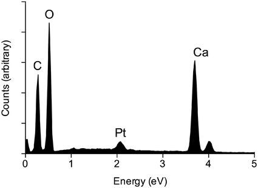
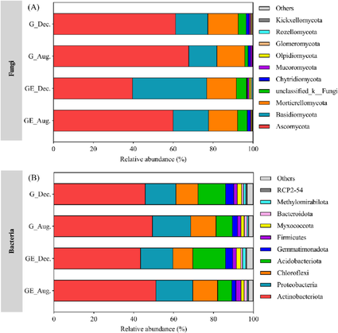

Qualitative elemental composition
| Vietnamese | qualitative elemental composition of a compound. (Phân tích nguyên tố có thể giúp xác định thành phần định tính các nguyên tố của hợp chất.) |
|---|---|
| English | Qualitative elemental composition |
| Pronunciation | — |
| Word type | noun (as labelled in the PDFs) |
Topic 3 — Meaning (Vietnamese)
qualitative elemental composition of a compound. (Phân tích nguyên tố có thể giúp xác định thành phần định tính các nguyên tố của hợp chất.)
Meaning (English)
The supplied PDF entry does not expose a separately labelled definition in extracted text.
Example
No separately labelled example was found in the extracted text for this PDF entry.
Images from the PDFs


